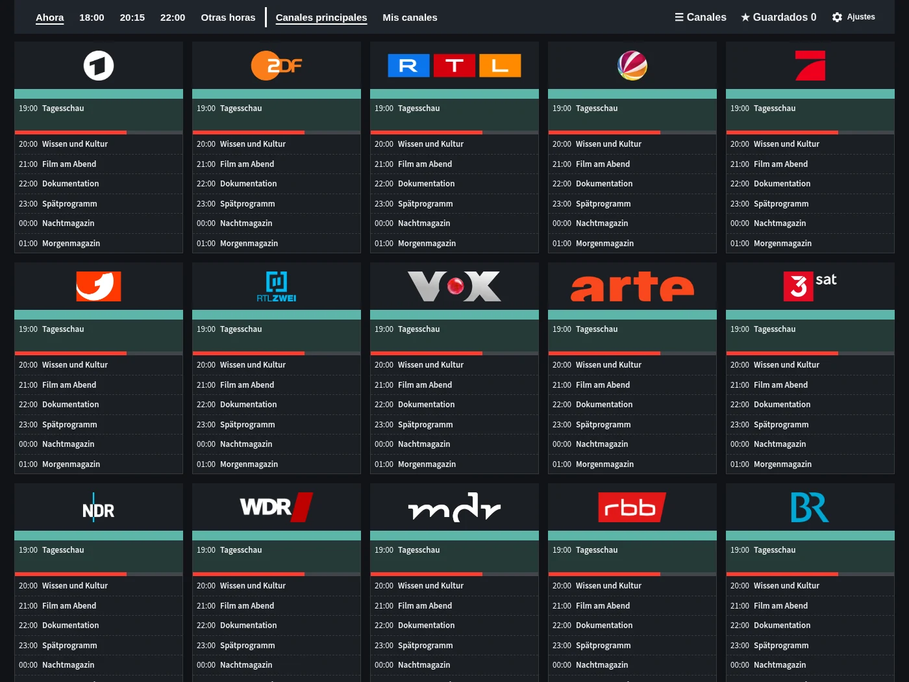
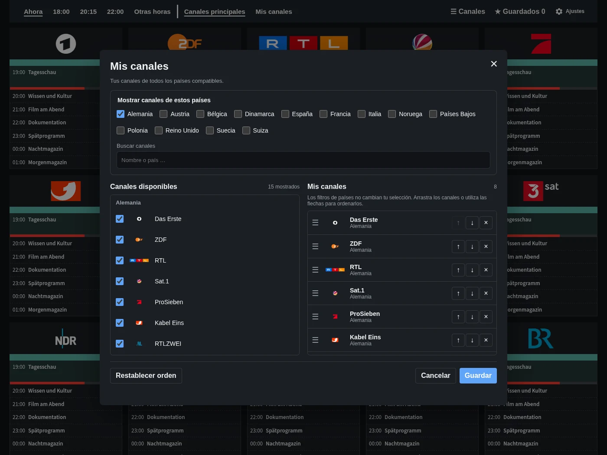
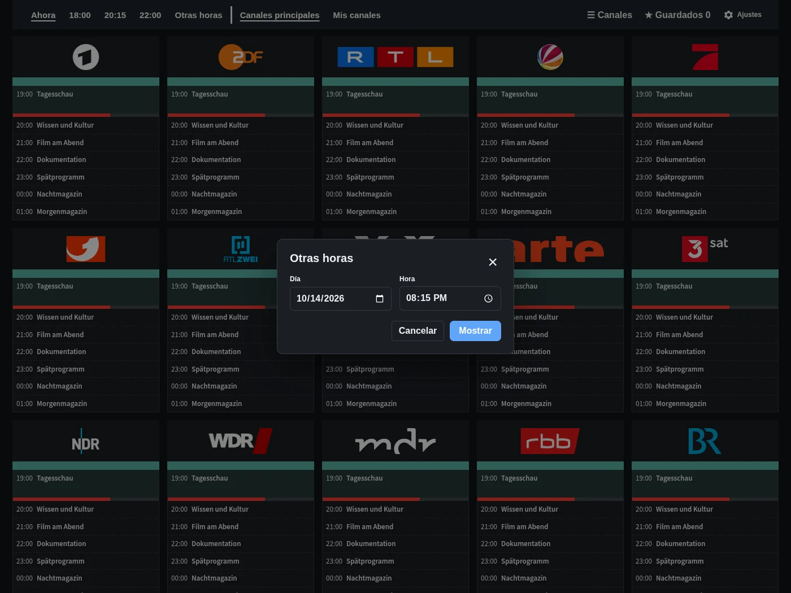
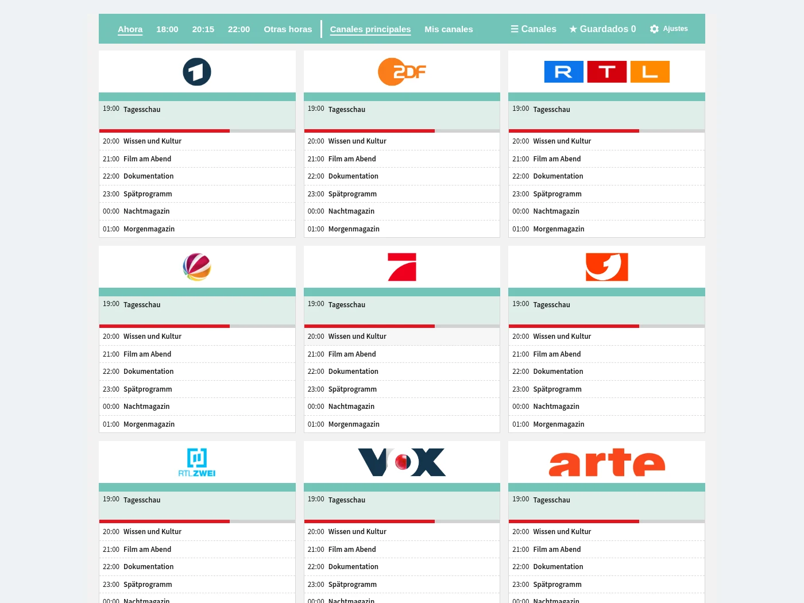

Guía de programación
Canales, horarios y programas de un vistazo. Ve directamente a ahora, 18:00, 20:15 o 22:00.
Descubre la guía de programación, las listas personales de canales, la selección de horarios y la tarjeta opcional.

Canales, horarios y programas de un vistazo. Ve directamente a ahora, 18:00, 20:15 o 22:00.

Elige tus favoritos de los países disponibles y ordénalos a tu gusto.

Elige otra fecha y hora sin salir de la guía.

Añade TV Guide a tu panel. La guía completa también está disponible en la barra lateral.
Programación de ejemplo. Los títulos se mantienen en su idioma original.
Gratis y directamente en Home Assistant.
Abrir en HACS